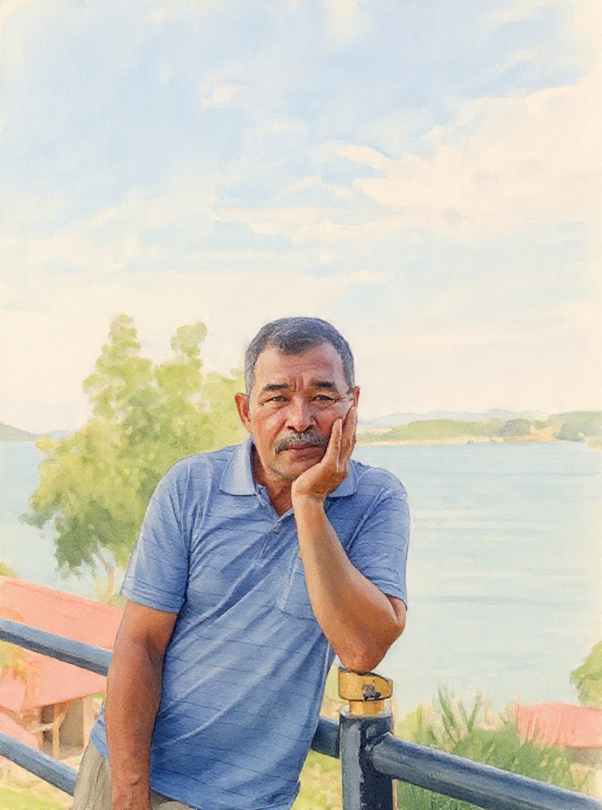
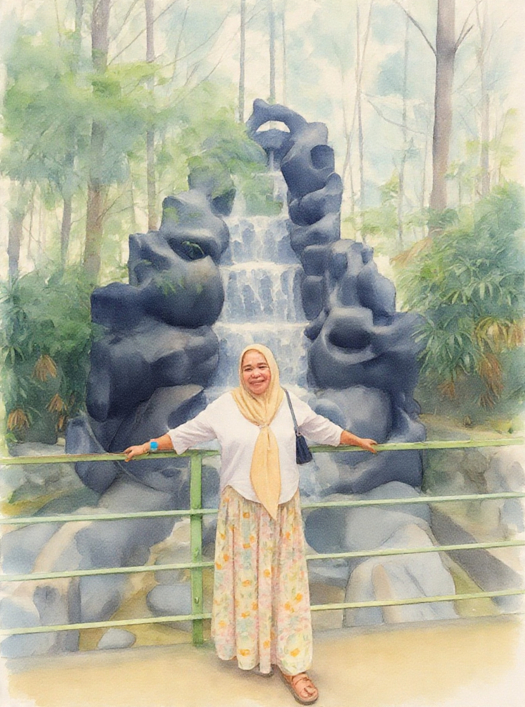
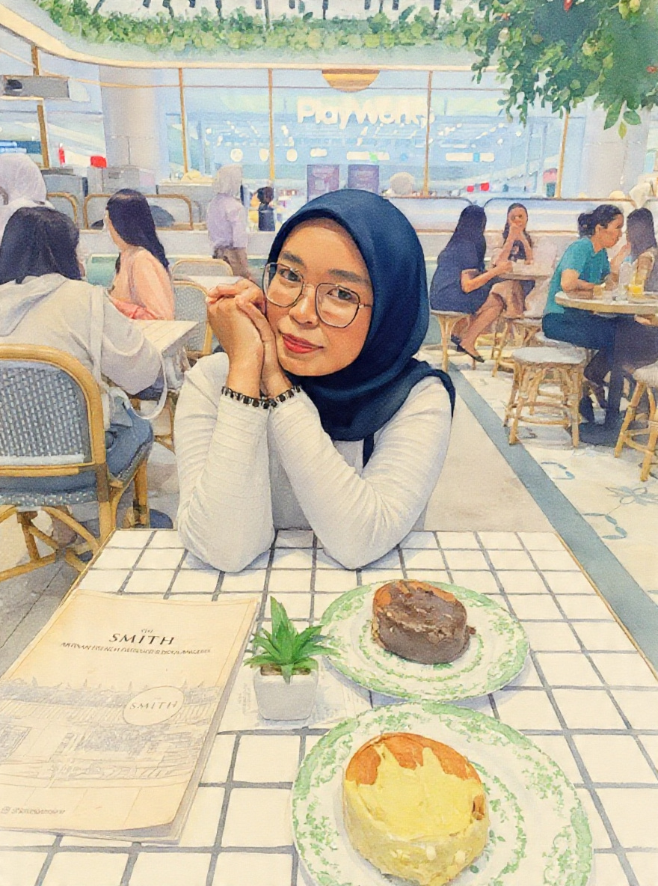
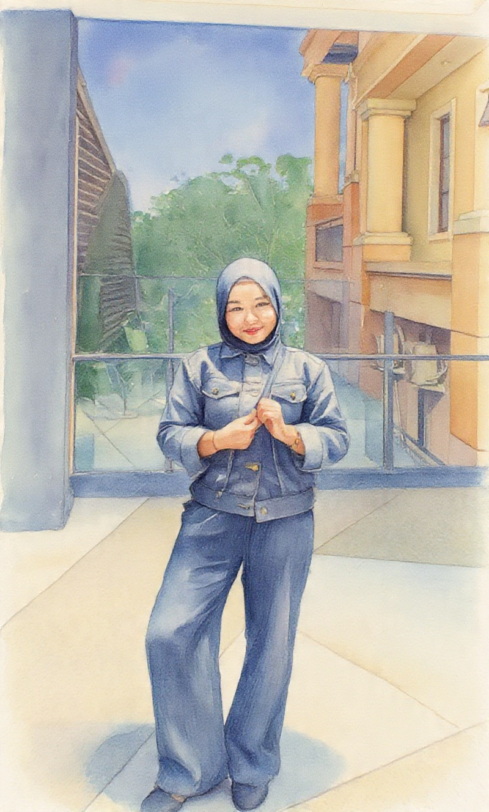

ちち
Chichi
Ayah
わたしのたいせつなひと
Watashi no kazoku
Keluargaku adalah orang-orang yang selalu ada untukku. Mereka menyayangiku, menjagaku, dan membuat rumah terasa hangat.
↓
だいすきな かぞく
Daisuki na kazoku
Keluarga yang kusayangi
Watashi no kazoku
Watashi no kazoku
Keluargaku
これは わたしの かぞくです。
Kore wa watashi no kazoku desu.
Ini adalah keluargaku.
わたしの かぞくは よにんです。
Watashi no kazoku wa yonin desu.
Keluargaku berjumlah empat orang.
わたしと ちちと ははと あねです。
Watashi to chichi to haha to ane desu.
Saya, ayah, ibu, dan kakak perempuan.
わたしは ひとりきょうだいです。
Watashi wa hitori kyoudai desu.
Saya anak tunggal.
わたしは ふたりきょうだいです。
Watashi wa futari kyoudai desu.
Saya bersaudara dua orang.
わたしは すえっこです。
Watashi wa suekko desu.
Saya anak bungsu.
Watashi no kazoku
Ini adalah anggota keluargaku.

Chichi
Ayah

Haha
Ibu

Ane
Kakak perempuan

Watashi
Saya
Kazoku no shoukai
Mengenal keluargaku lebih dekat.
Chichi — Ayah
ちちは あおいふくを きています。
Chichi wa aoi fuku o kite imasu.
Ayah memakai baju biru.
ちちは とても やさしいです。
Chichi wa totemo yasashii desu.
Ayah sangat baik.
ちちは いつも わたしに おこづかいを くれます。
Chichi wa itsumo watashi ni okozukai o kuremasu.
Ayah selalu memberi saya uang jajan.
Haha — Ibu
ははは きいろいスカーフを しています。
Haha wa kiiroi sukaafu o shite imasu.
Ibu memakai jilbab kuning.
ははは しんせつなひとです。
Haha wa shinsetsu na hito desu.
Ibu adalah orang yang baik dan perhatian.
ははは いつも かぞくを たすけます。
Haha wa itsumo kazoku o tasukemasu.
Ibu selalu membantu keluarga.
Ane — Kakak perempuan
あねは しろいふくを きています。
Ane wa shiroi fuku o kite imasu.
Kakak perempuan memakai baju putih.
あねは やさしいひとです。
Ane wa yasashii hito desu.
Kakak perempuan adalah orang yang baik hati.
あねは おもしろいひとです。
Ane wa omoshiroi hito desu.
Kakak perempuan adalah orang yang menyenangkan.
Watashi — Saya
わたしは くろいふくを きています。
Watashi wa kuroi fuku o kite imasu.
Saya memakai baju hitam.
わたしは かぞくが だいすきです。
Watashi wa kazoku ga daisuki desu.
Saya sangat menyayangi keluarga saya.
わたしは かぞくと すごすのが すきです。
Watashi wa kazoku to sugosu no ga suki desu.
Saya suka menghabiskan waktu bersama keluarga.
かぞくは たからものです。
Kazoku wa takaramono desu.
Keluarga adalah harta yang berharga.
ありがとう
Arigatou
Terima kasih.